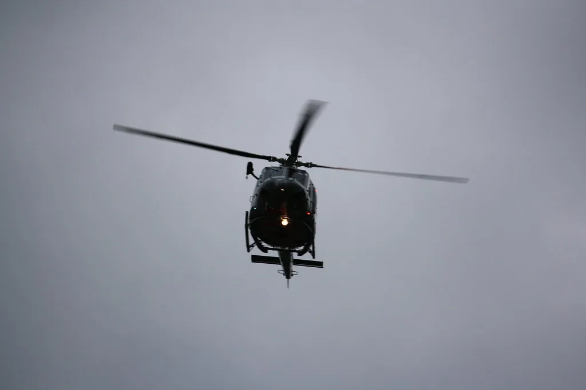
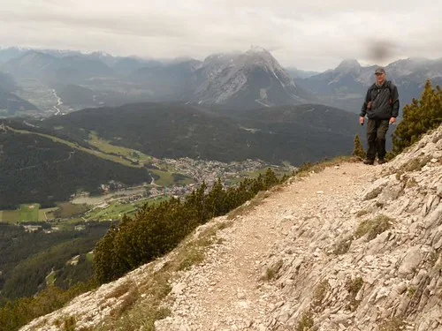

LG유플러스, 산악 조난자 수색 범위 99% 줄이는 기술 실증
LG유플러스가 산악에서 조난당한 사람을 찾는 수색 범위를 통신 데이터 분석만으로 99% 줄이는 기술을 실증했다고 11일 밝혔다. 전파 분석 전문기업 솔빛시스템과 함께 전북 진안군 운장산 일대에서 진행된 이번 실증은 위성항법장치, 즉 GPS 신호가 끊기거나 휴대전화 전원이 꺼진 극한 상황에서도 수색 구역을 효과적으로 좁힐 수 있는지를 확인하는 데 초점을 맞췄다.
이번 실증에는 솔빛시스템이 개발한 지능형 수색지원시스템, 이른바 iSAR가 활용됐다. 이 시스템은 조난자의 휴대전화가 마지막으로 접속한 기지국의 전파 도달 범위와 안테나 방향, 시간대별 접속 기록 등 여러 통신 데이터를 종합적으로 분석해 조난자가 있을 가능성이 높은 구역을 추려내는 방식으로 작동한다. GPS 위치 정보에만 의존하지 않기 때문에 산속 깊은 곳처럼 위성 신호가 잡히지 않는 지역에서도 쓸 수 있다는 점이 특징이다.

실증 결과는 기대 이상이었다. 마지막으로 접속한 기지국 정보만을 기준으로 삼았을 때 예상되는 수색 범위는 706.86㎢에 달했지만, iSAR의 통신 데이터 분석을 거치자 이 범위가 4.13㎢로 줄었다. 수색해야 할 면적이 약 99% 줄어든 셈으로, 서울 전체 면적과 비슷했던 수색 구역이 축구장 수백 개 규모로 압축된 것과 맞먹는 변화다.
산악 조난 수색은 통상 넓은 면적을 인력과 장비로 훑어야 해 시간이 오래 걸리고, 날씨나 지형에 따라 수색 속도가 크게 달라지는 어려움이 있었다. 특히 조난자의 휴대전화가 꺼지거나 GPS 신호가 닿지 않는 지역에서는 기존 위치추적 기법이 무용지물이 되는 경우가 많아, 수색 인력이 산 전체를 훑듯이 이동하며 시간을 들여야 했다. 이런 상황에서 통신 기록만으로 구역을 압축할 수 있다면 초기 골든타임 안에 조난자를 찾을 가능성이 그만큼 커진다. 해마다 가을철이면 단풍철 등산객이 늘면서 전국적으로 산악 조난 신고도 함께 증가하는 추세여서, 수색 효율을 높이는 기술에 대한 수요는 꾸준히 이어지고 있다.

LG유플러스와 솔빛시스템은 이번 실증으로 기술의 가능성을 확인한 데 이어, 추가 실증을 통해 정확도와 실제 현장에서의 활용성을 더 검증할 계획이라고 밝혔다. 두 회사는 검증 결과를 바탕으로 소방이나 경찰 등 긴급구조기관의 수색 지원 체계에 이 기술을 적용하는 방안도 함께 검토하기로 했다. 통신사가 가진 기지국 데이터를 재난 상황에 접목하는 이런 협업 사례가 늘어날수록, 실제 구조 현장에서 활용할 수 있는 기술 범위도 함께 넓어질 것으로 예상된다.
이 기술이 실제 구조 현장에 도입되면 초기 수색 범위를 빠르게 좁혀 인력과 장비를 효율적으로 배치할 수 있을 것으로 기대된다. 특히 가을철 등산객 증가와 함께 산악 조난 신고가 늘어나는 시기를 앞두고 있어, 통신 데이터를 활용한 수색 보조 기술이 실제 현장에 자리잡을 수 있을지 관심이 모인다.
통신사가 보유한 기지국 인프라와 접속 기록을 재난 대응에 활용하는 시도는 이번이 처음은 아니지만, 수색 범위를 99%까지 좁힌 사례는 눈에 띄는 성과로 평가된다. 업계에서는 이런 기술이 상용화 단계에 들어서면 소방·경찰 등 긴급구조기관이 별도의 전용 장비를 추가로 갖추지 않고도 기존 통신 데이터만으로 초기 대응 속도를 크게 끌어올릴 수 있을 것으로 내다보고 있다. LG유플러스는 이번 실증 데이터를 토대로 산악 지형별 정확도 차이를 보완해 나갈 계획이라고 덧붙였다.